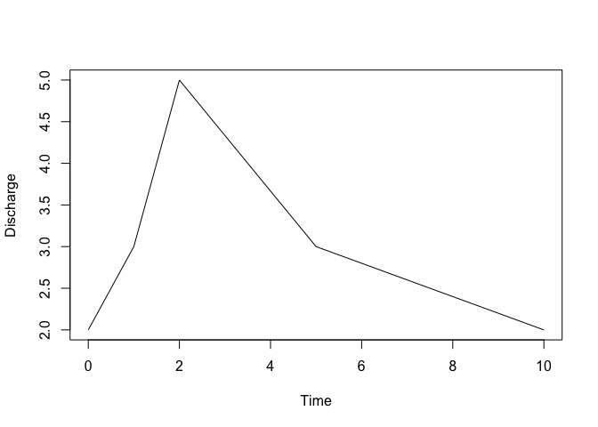
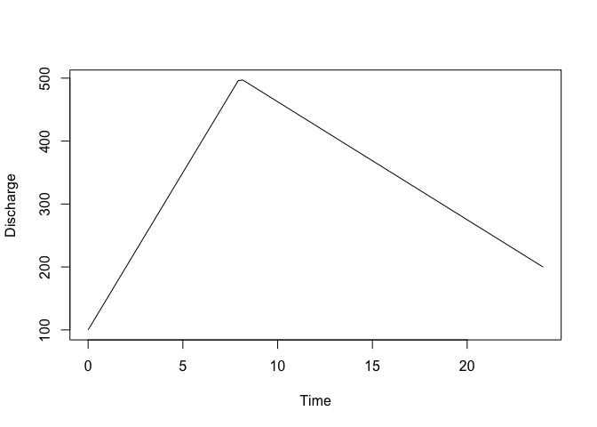
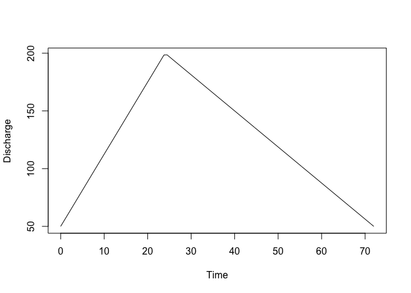
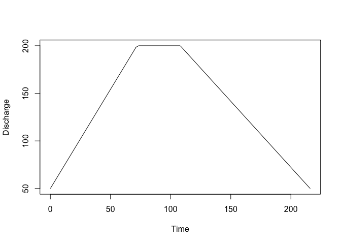

The goal of gbem is to implement a gravel bed river bank erosion model, calculating erosion volumes expected at a river’s cross section given an event hydrograph.
WARNING: This package is under active development and is not intended to be used yet.
Installation
As gbem is not on CRAN, you can install it from GitHub by running the following command in R:
remotes::install_github("stochaGBEM/gbem")If this doesn’t work, you may have to install the remotes package with the command install.packages("remotes").
Example
Cross Sections
Make a channel cross section:
cs <- cross_section(15, grad = 0.02, d50 = 65, d84 = 100, roughness = 0.01)
cs
#> Channel with width 15What’s the largest flow that the channel can accommodate without eroding?
eroding_flow(cs)
#> [1] 10.52962Hydrographs
Make a hydrograph from scratch:
hg <- hydrograph(
2 ~ 0, 3 ~ 1, 5 ~ 2, 3 ~ 5, 2 ~ 10
)
plot(hg)
Or, from a data frame; this time, also specify a time multiplier:
data.frame(times = c(0, 1 / 3, 1), flow = c(100, 500, 200)) |>
as_hydrograph(times_from = times, flows_from = flow, unit = 24) |>
plot()
There are canned hydrographs for snowmelt-related and rainfall-related events, too:


You can easily discretize the hydrograph if you’d like to do manual calculations:
discretize_hydrograph(hg, 10)
#> # A tibble: 10 × 2
#> time flow
#> <dbl> <dbl>
#> 1 0 2
#> 2 1.11 3.22
#> 3 2.22 4.85
#> 4 3.33 4.11
#> 5 4.44 3.37
#> 6 5.56 2.89
#> 7 6.67 2.67
#> 8 7.78 2.44
#> 9 8.89 2.22
#> 10 10 2Gravel-bed river bank erosion model
Let a hydrograph erode a channel using gbem(). That returns a gbem object encoding information about channel changes. Run erode() to execute the changes to get a new cross section:
h <- hyd_rain(eroding_flow(cs) * 4, eroding_flow(cs))
g <- gbem(h, cross_section = cs)
erode(g)
#> Channel with width 46.1486486486487